14 Manipuler des dates et des heures
Dans les études de biologie, d’écologie ou d’agronomie, nous utilisons fréquemment des données de température provenant de dataloggers. Dans cette étude de cas, nous verrons comment analyser ces données en utilisant les données de température de l’altiplano bolivien près de la ville de El Alto. La première étape consiste à transformer les données du datalogger en un format facile à lire pour R. Nous utiliserons un fichier CSV et la fonction read.table(). Le fichier peut être téléchargé à partir du site Web du livre sur GitHub (https://github.com/frareb/myRBook_FR/blob/master/myFiles/E05C13.csv), ou alors lu directement par R depuis sa source (https://raw.githubusercontent.com/frareb/myRBook_FR/master/myFiles/E05C13.csv).
# Lecture du fichier en local après téléchargement :
bdd <- read.table(
"myFiles/E05C13.csv",
skip = 1, header = TRUE,
sep = ",", dec = ".",
stringsAsFactors = FALSE)
# Lecture du fichier depuis GitHub :
# URL <- paste0("https://raw.githubusercontent.com/",
# "frareb/myRBook_FR/master/myFiles/E05C13.csv")
# bdd <- read.table(
# URL,
# skip = 1,
# header = TRUE,
# sep = ",",
# dec = ".",
# stringsAsFactors = FALSE)
colnames(bdd) <- c("id", "date", "temp")
head(bdd)## id date temp
## 1 1 11/12/15 23:00:00 4.973
## 2 2 11/12/15 23:30:00 4.766
## 3 3 11/13/15 00:00:00 4.844
## 4 4 11/13/15 00:30:00 4.844
## 5 5 11/13/15 01:00:00 5.076
## 6 6 11/13/15 01:30:00 5.282## id date temp
## 32781 32781 09/25/17 21:00:00 7.091
## 32782 32782 09/25/17 21:30:00 6.914
## 32783 32783 09/25/17 22:00:00 6.813
## 32784 32784 09/25/17 22:30:00 6.611
## 32785 32785 09/25/17 23:00:00 6.331
## 32786 32786 09/25/17 23:30:00 5.385## 'data.frame': 32786 obs. of 3 variables:
## $ id : int 1 2 3 4 5 6 7 8 9 10 ...
## $ date: chr "11/12/15 23:00:00" "11/12/15 23:30:00" "11/13/15
00:00:00" "11/13/15 00:30:00" ...
## $ temp: num 4.97 4.77 4.84 4.84 5.08 ...Nous pouvons voir que la date est au format character et qu’elle contient la date avec le mois, le jour et l’année séparés par /, puis vient un espace et l’heure avec des heures de 0 à 24, minutes et secondes, séparés par : (exemple: 11/12/15 23:00:00 pour le 12 novembre 2015 à 11 heures du soir). Nous allons séparer les informations en plusieurs objets. Séparons d’abord la date de l’heure. Pour cela, nous utiliserons la fonction strsplit() en utilisant l’espace entre la date et l’heure comme séparateur.
## [[1]]
## [1] "11/12/15" "23:00:00"Comme l’indiquent les doubles crochets, la fonction strsplit() renvoie un objet au format list. Nous voulons le vecteur qui correspond au premier élément de la liste, donc nous allons ajouter [[1]].
## [1] "11/12/15" "23:00:00"Le premier élément du vector est la date. Pour avoir toutes les dates, nous allons faire une boucle avec la fonction sapply().
## [1] "11/12/15" "11/12/15" "11/13/15" "11/13/15" "11/13/15"
## [6] "11/13/15"Ensuite, nous aurons besoin des dates dans le format Date. pour cela nous allons transformer l’objet au format Date avec la fonction as.Date().
bddDay <- as.Date(
sapply(
strsplit(
bdd[, 2],
split = " "),
"[[", 1),
format = "%m/%d/%y")
head(bddDay)## [1] "2015-11-12" "2015-11-12" "2015-11-13" "2015-11-13"
## [5] "2015-11-13" "2015-11-13"Nous allons maintenant ajouter l’objet bddDay à notre data.frame bdd. Ensuite, nous allons vérifier que cette nouvelle colonne dans notre data.frame est bien au format Date avec la fonction str()
## 'data.frame': 32786 obs. of 4 variables:
## $ id : int 1 2 3 4 5 6 7 8 9 10 ...
## $ date: chr "11/12/15 23:00:00" "11/12/15 23:30:00" "11/13/15
00:00:00" "11/13/15 00:30:00" ...
## $ temp: num 4.97 4.77 4.84 4.84 5.08 ...
## $ day : Date, format: "2015-11-12" ...Si l’information concernant la date n’est pas suffisante, nous pouvons ajouter l’heure. Dans ce cas c’est le format POSIX qu’il faudra utiliser avec la fonction as.POSIXct(). De la même manière nous allons ajouter l’information dans notre objet bdd et vérifier le format avec la fonction str().
## [1] "2015-11-12 23:00:00 CET" "2015-11-12 23:30:00 CET"
## [3] "2015-11-13 00:00:00 CET" "2015-11-13 00:30:00 CET"
## [5] "2015-11-13 01:00:00 CET" "2015-11-13 01:30:00 CET"## 'data.frame': 32786 obs. of 5 variables:
## $ id : int 1 2 3 4 5 6 7 8 9 10 ...
## $ date : chr "11/12/15 23:00:00" "11/12/15 23:30:00"
"11/13/15 00:00:00" "11/13/15 00:30:00" ...
## $ temp : num 4.97 4.77 4.84 4.84 5.08 ...
## $ day : Date, format: "2015-11-12" ...
## $ posix: POSIXct, format: "2015-11-12 23:00:00" ...Dans les fonctions as.Date() et as.POSIXct(), nous avons utilisé l’argument format qui correspond au format dans lequel l’information sur la date est codée. Voici les éléments les plus courants pour le formatage de la date :
| code | Valeur |
|---|---|
| %a | jour de la semaine (abréviation) |
| %A | jour de la semaine |
| %b | mois (abréviation) |
| %B | mois |
| %d | jour du mois (decimal) |
| %j | jour de l’année (decimal) |
| %m | mois (decimal) |
| %y | année avec deux chiffres |
| %Y | année |
| %U | semaine de l’année en commençant par dimanche (decimal) |
| %W | semaine de l’année en commençant par lundi (decimal) |
| %H | heure 24 |
| %I | heure 12 |
| %M | minute |
| %S | seconde |
Nous pouvons visualiser les données avec la fonction plot().
par(mar = c(4, 4, 1, 1)) # réduction des marges
plot(x = bdd$day, y = bdd$temp,
type = 'l', ylim = c(-15, 40),
xlab = "Temps", ylab = "Température (°C)")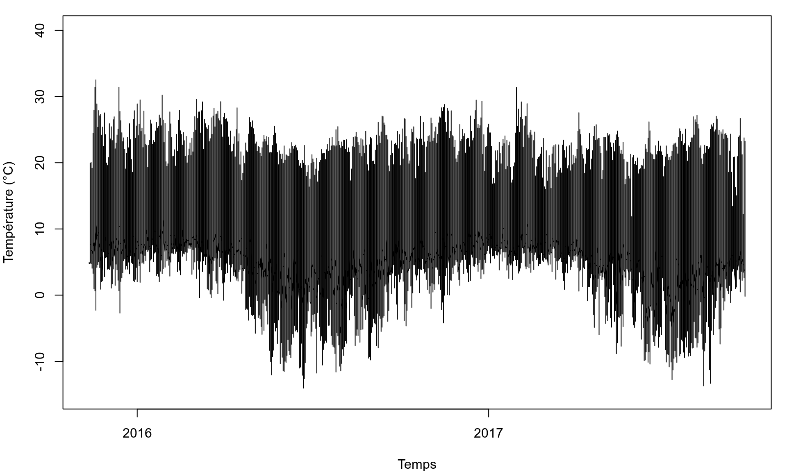
Nous pouvons simplifier les informations en ne calculant que les températures minimales, moyennes et maximales avec la fonction tapply().
tempDayMean <- tapply(bdd$temp, INDEX = bdd$day, FUN = mean)
tempDayMin <- tapply(bdd$temp, INDEX = bdd$day, FUN = min)
tempDayMax <- tapply(bdd$temp, INDEX = bdd$day, FUN = max)
par(mar = c(4, 4, 1, 1)) # réduction des marges
plot(x = as.Date(names(tempDayMean), format = "%Y-%m-%d"),
y = tempDayMean, type = 'l', ylim = c(-15, 40),
xlab = "Temps", ylab = "Température (°C)")
points(as.Date(names(tempDayMin), format = "%Y-%m-%d"),
y = tempDayMin, type = 'l', col = 4)
points(as.Date(names(tempDayMax), format = "%Y-%m-%d"),
y = tempDayMax, type = 'l', col = 2)
legend("topright", legend = c("min", "max", "mean"),
lty = 1, lwd = 2, col = c(4, 2, 1))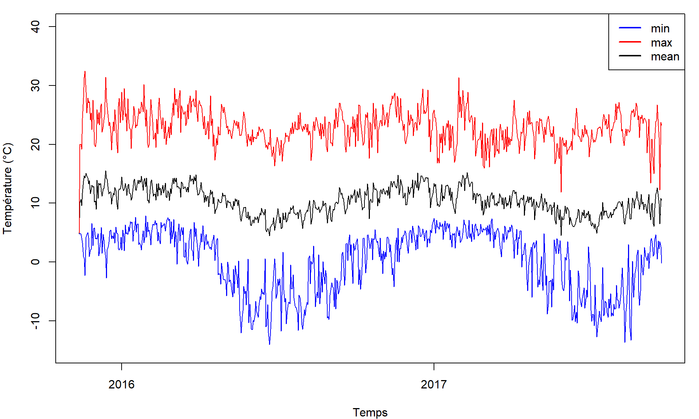
Nous pouvons très facilement représenter le même information par semaine. Il suffit de changer l’argument INDEX pour une date en semaine. Voici un exemple de format par semaine :
## [1] "2015-45" "2015-45" "2015-45" "2015-45" "2015-45"
## [6] "2015-45"Et voici le graphique par semaine :
tempWeekMean <- tapply(bdd$temp,
INDEX = format(bdd$posix, format = "%Y-%W-1"), FUN = mean)
tempWeekMin <- tapply(bdd$temp,
INDEX = format(bdd$posix, format = "%Y-%W-1"), FUN = min)
tempWeekMax <- tapply(bdd$temp,
INDEX = format(bdd$posix, format = "%Y-%W-1"), FUN = max)
par(mar = c(4, 4, 1, 1)) # réduction des marges
plot(x = as.Date(names(tempWeekMean), format = "%Y-%W-%u"),
y = tempWeekMean, type = 'l', ylim = c(-15, 40),
xlab = "Fecha", ylab = "Temperatura (°C)")
points(x = as.Date(names(tempWeekMin), format = "%Y-%W-%u"),
y = tempWeekMin, type = 'l', col = 4)
points(x = as.Date(names(tempWeekMax), format = "%Y-%W-%u"),
y = tempWeekMax, type = 'l', col = 2)
legend("topright", legend = c("min", "max", "promedio"),
lty = 1, lwd = 2, col = c(4, 2, 1))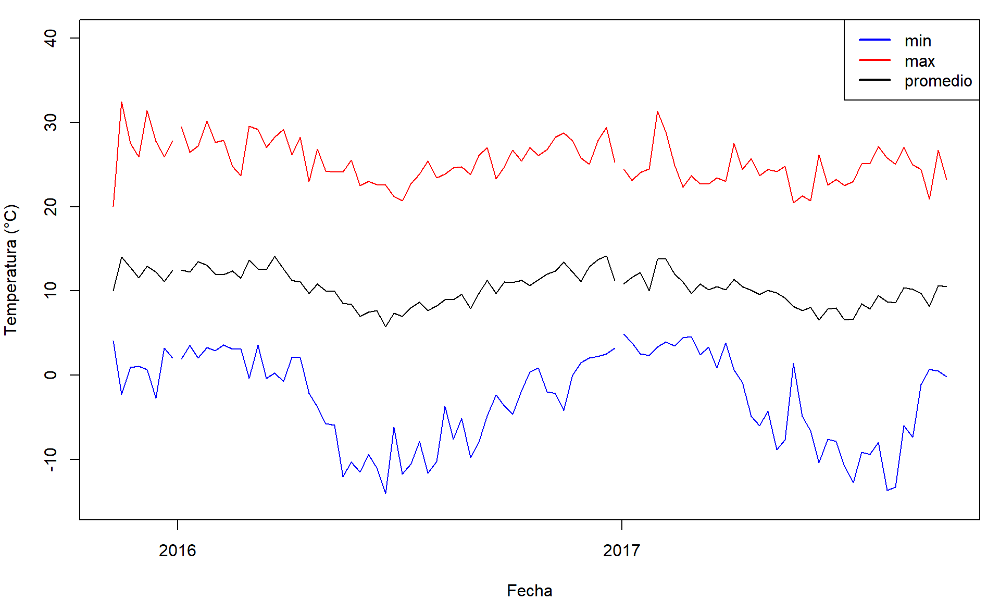
Dans ce type de représentation nous perdons l’information sur la variabilité des températures par semaine. En focntion des objectifs il pourra être intéressant de préférer une représentation sous forme de boxplot (ici un boxplot par mois en formattant la date avec "%Y-%m").
par(mar = c(5, 4, 0, 0))
boxplot(
bdd$temp ~ format(bdd$posix, format = "%Y-%m"),
las = 3,
xlab = "", ylab = "Température (°C)")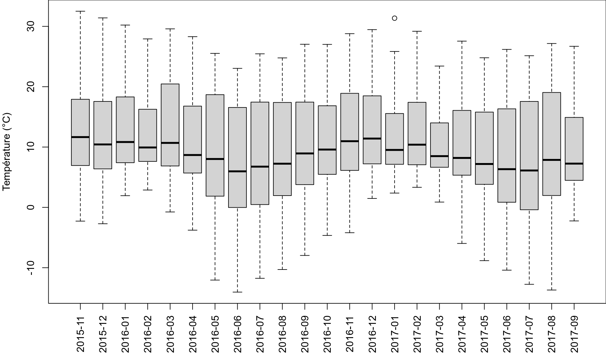
Pour comparer les différentes valeurs de température, il peut être utile d’attribuer une couleur à chaque boxplot. Par exemple, nous pouvons utiliser un gradient de couleur du bleu au rouge en utilisant la valeur de la température moyenne.
tempMonthMean <- tapply(bdd$temp,
INDEX = format(bdd$posix, format = "%Y-%m"), FUN = mean)
myCol <- colorRampPalette(c("blue", "red"))(101)
tempMeanDayPos <- round(
(tempMonthMean - min(tempMonthMean)) /
(max(tempMonthMean) - min(tempMonthMean))*100) + 1
par(mar = c(5, 4, 0, 0))
boxplot(
bdd$temp ~ format(bdd$posix, format = "%Y-%m"),
las = 3,
col = myCol[tempMeanDayPos],
xlab = "", ylab = "Température (°C)")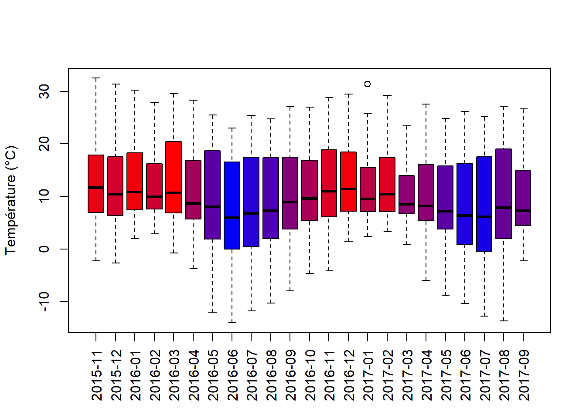
Et pour celles et ceux qui utilisent ggplot2 :
pkgCheck <- function(x){
if (!require(x, character.only = TRUE)){
install.packages(x, dependencies = TRUE)
if(!require(x, character.only = TRUE)) {
stop()
}
}
}
pkgCheck("ggplot2")
tempMonthMean <- tapply(bdd$temp,
INDEX = format(bdd$posix, format = "%Y-%m"), FUN = mean)
myCol <- colorRampPalette(c("blue", "red"))(101)
tempMeanDayPos <- round(
(tempMonthMean - min(tempMonthMean)) /
(max(tempMonthMean) - min(tempMonthMean))*100) + 1
p01 <- ggplot(data = bdd,
aes(
x = posix,
y = temp,
group = format(posix, format = "%Y-%m"))) +
geom_boxplot(
outlier.colour = "black",
fill = myCol[tempMeanDayPos])
p01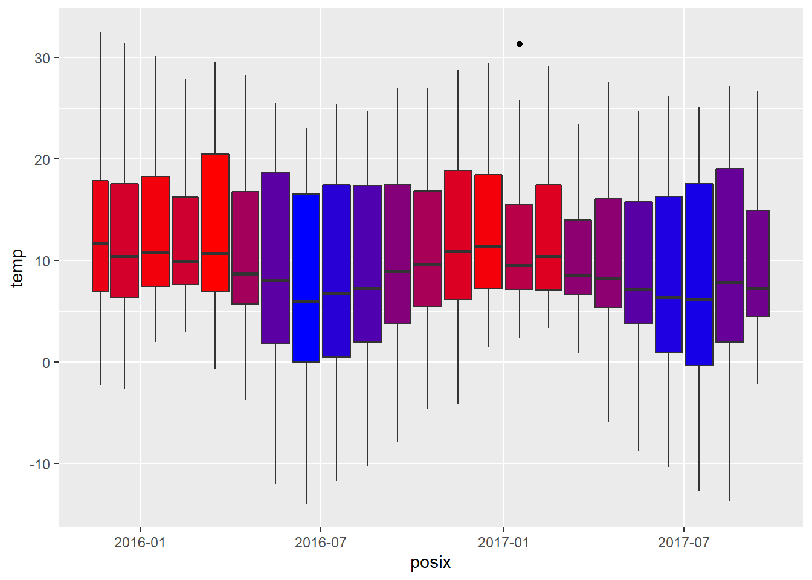
Nous pouvons également calculer la différence entre la température maximale et la température minimale (variation de la température diurne).
tempDayTR <- tempDayMax - tempDayMin
par(mar = c(4, 4, 1, 1)) # réduction des marges
plot(
x = as.Date(names(tempDayMean), format = "%Y-%m-%d"),
y = tempDayTR, type = 'l', ylim = c(5, 45),
xlab = "Fecha",
ylab = "Variation de température diurne (°C)")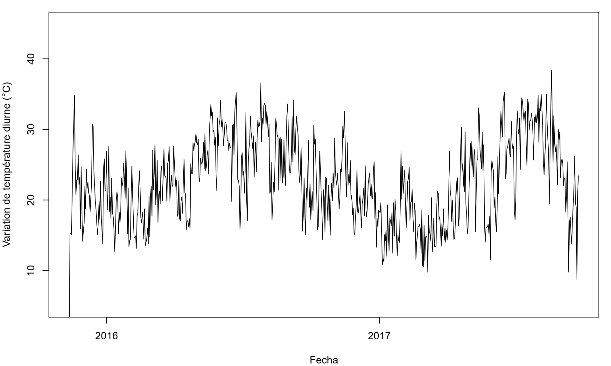
Une autre possibilité est de regrouper les données pour avoir la température moyenne des heures de la journée avec la fonction aggregate().
tempHourMean <- aggregate(
x = bdd$temp,
by = list(format(bdd$posix, format = "%H:%M")),
FUN = mean)
tempHourMin <- aggregate(
x = bdd$temp,
by = list(format(bdd$posix, format = "%H:%M")),
FUN = min)
tempHourMax <- aggregate(
x = bdd$temp,
by = list(format(bdd$posix, format = "%H:%M")),
FUN = max)
hours <- seq(from = 0, to = 23.5, by = 0.5)
par(mar = c(4, 4, 1, 1)) # réduction des marges
plot(x = hours,
y = tempHourMean[, 2], type = 'l', ylim = c(-15, 40),
xlab = "", ylab = "Température (°C)", lwd = 2,
xaxt = "n", panel.first = {
abline(v = hours, col = "gray", lty = 2)
abline(h = 0, lty = 2)
})
axis(
side = 1,
at = hours,
labels = tempHourMean[, 1],
las = 2)
points(
x = hours,
y = tempHourMin[, 2],
type = 'l', col = 4, lwd = 2)
points(
x = hours,
y = tempHourMax[, 2],
type = 'l', col = 2, lwd = 2)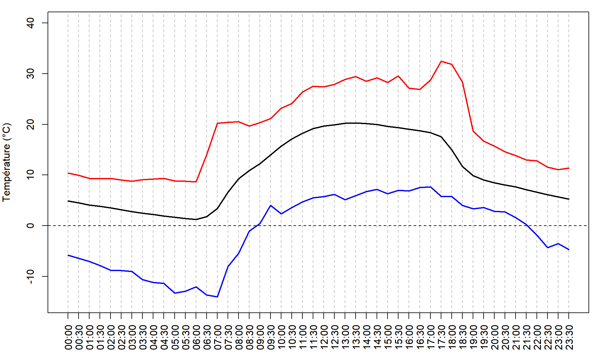
Nous pouvons également calculer les températures des heures de la journée pour chaque mois.
meses <- c("Janvier", "Février", "Mars", "Avril", "Mai",
"Juin", "Juillet", "Août", "Septembre", "Octobre",
"Novembre", "Décembre")
hours <- seq(from = 0, to = 23.5, by = 0.5)
bddMonth <- format(bdd$day, format = "%m")
tempDayEachMonth <- lapply(
sort(unique(bddMonth)), function(myMonth){
bddX <- bdd[bddMonth == myMonth, ]
tempHourMean <- aggregate(
x = bddX$temp,
by = list(format(bddX$posix, format = "%H:%M")),
FUN = mean)
tempHourMin <- aggregate(
x = bddX$temp,
by = list(format(bddX$posix, format = "%H:%M")),
FUN = min)
tempHourMax <- aggregate(
x = bddX$temp,
by = list(format(bddX$posix, format = "%H:%M")),
FUN = max)
return(
data.frame(
tempHourMean,
tempHourMin,
tempHourMax))
})
par(mar = c(4, 4, 1, 1))
# for (i in seq_along(tempDayEachMonth)){ # pour tous les mois
for (i in 1:2){ # uniquement Janvier et Février
plot(x = hours, y = tempDayEachMonth[[i]][, 2],
type = 'l', ylim = c(-15, 40),
xlab = "", ylab = "Température (°C)", lwd = 2,
main = meses[i],
xaxt = "n", panel.first = {
abline(v = hours, col = "gray", lty = 2)
abline(h = 0, lty = 2)
})
axis(
side = 1,
at = hours,
labels = tempHourMean[, 1],
las = 2)
points(
x = hours,
y = tempDayEachMonth[[i]][, 4],
type = 'l', col = 4, lwd = 2)
points(
x = hours,
y = tempDayEachMonth[[i]][, 6],
type = 'l', col = 2, lwd = 2)
}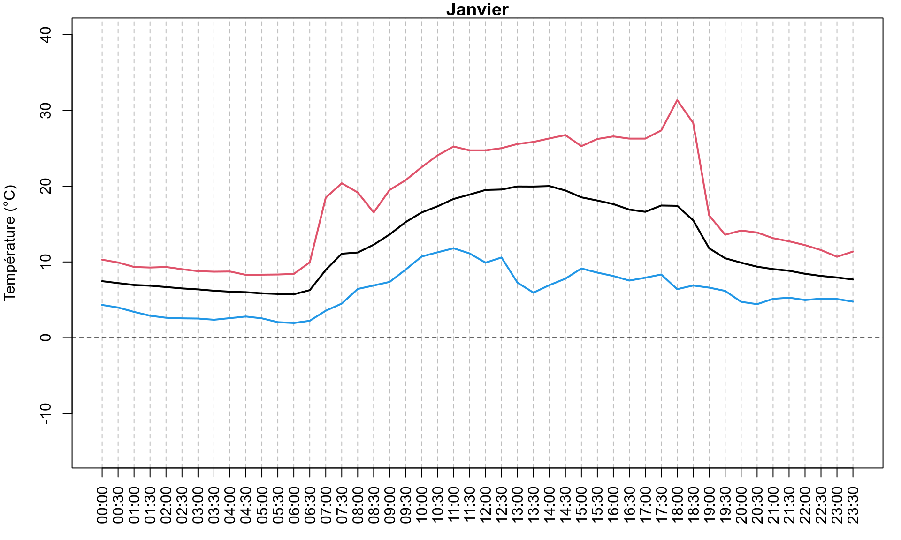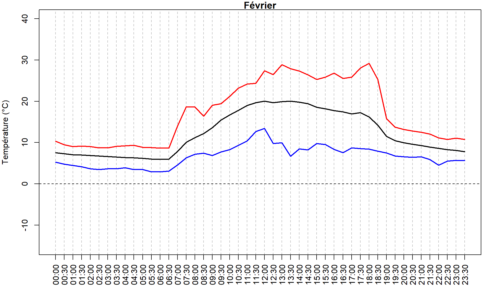
Ou les regrouper dans un même graphique, ainsi que la variation diurne des températures pour chaque mois.
par(mar = c(4, 4, 1, 1)) # réduction des marges
plot(
x = hours,
y = tempDayEachMonth[[1]][, 2],
type = 'n',
ylim = c(-10, 35),
xlab = "",
ylab = "Température moyenne (°C)",
xaxt = "n",
panel.first = {
abline(v = hours, col = "gray", lty = 2)
abline(h = 0, lty = 2)
})
axis(
side = 1,
at = hours,
labels = tempHourMean[, 1],
las = 2)
myColors <- c("#A6CEE3", "#1F78B4", "#B2DF8A", "#33A02C",
"#FB9A99", "#E31A1C", "#FDBF6F", "#FF7F00", "#CAB2D6",
"#6A3D9A", "#FFFF99", "#B15928")
for (i in seq_along(tempDayEachMonth)){
points(x = hours,
y = tempDayEachMonth[[i]][, 2],
type = 'l', col = myColors[i], lwd = 2)
}
legend(
"topright",
ncol = 4,
legend = meses,
col = myColors,
lty = 1, lwd = 2,
cex = 0.8, bg = "white")
par(mar = c(4, 4, 1, 1)) # réduction des marges
plot(
x = hours,
y = tempDayEachMonth[[1]][, 2],
type = 'n',
ylim = c(0, 30),
xlab = "",
ylab = "Variation de température diurne (°C)",
xaxt = "n",
panel.first = {
abline(v = hours, col = "gray", lty = 2)
abline(h = 0, lty = 2)
})
axis(
side = 1,
at = hours,
labels = tempHourMean[, 1],
las = 2)
myColors <- c("#A6CEE3", "#1F78B4", "#B2DF8A", "#33A02C",
"#FB9A99", "#E31A1C", "#FDBF6F", "#FF7F00", "#CAB2D6",
"#6A3D9A", "#FFFF99", "#B15928")
for (i in seq_along(tempDayEachMonth)){
points(
x = hours,
y = tempDayEachMonth[[i]][, 6] -
tempDayEachMonth[[i]][, 4],
type = 'l',
col = myColors[i],
lwd = 2)
}
legend(
"topright",
ncol = 4,
legend = meses,
col = myColors,
lty = 1, lwd = 2,
cex = 0.8, bg = "white")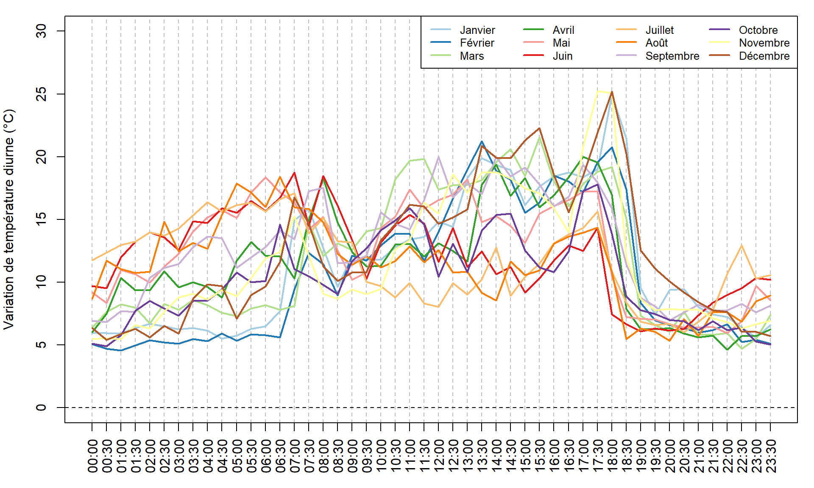
Nous pouvons aussi représenter les températures journalières avec des graphiques de type “ridgeline” et le package ggplot2 (https://www.data-to-viz.com/graph/ridgeline.html).
pkgCheck <- function(x){
if (!require(x, character.only = TRUE)){
install.packages(x, dependencies = TRUE)
if(!require(x, character.only = TRUE)) {
stop()
}
}
}
pkgCheck("ggplot2")
pkgCheck("ggridges")## Loading required package: ggridges## Loading required package: viridis## Loading required package: viridisLitemeanTemps <- unlist(lapply(tempDayEachMonth, "[[", 2))
labelMonth <- rep(meses, each = 48)
dfTemps <- data.frame(month = labelMonth, value = meanTemps,
stringsAsFactors = FALSE)
dfTemps$month <- factor(dfTemps$month, levels = rev(meses))
p <- ggplot(
data = dfTemps,
aes(y = month, x = value, fill = ..x..))
p <- p + geom_density_ridges_gradient(stat = "binline")
p <- p + scale_fill_viridis(
name = "Temp. [°C]", option = "C")
p <- p + xlab("Temperature") + ylab("") +
theme(
legend.position="none",
panel.spacing = unit(0.1, "lines"),
strip.text.x = element_text(size = 8)
)
p## `stat_binline()` using `bins = 30`. Pick better value with `binwidth`.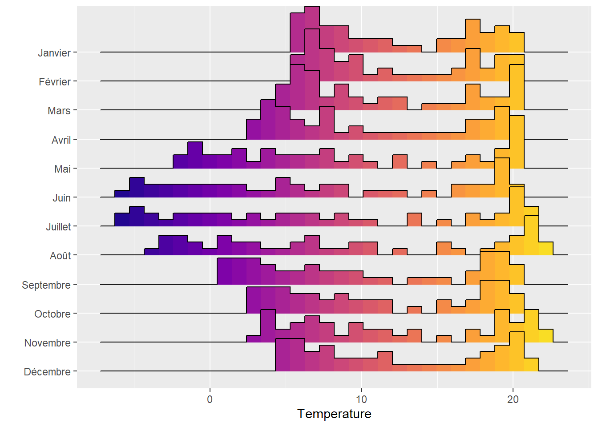